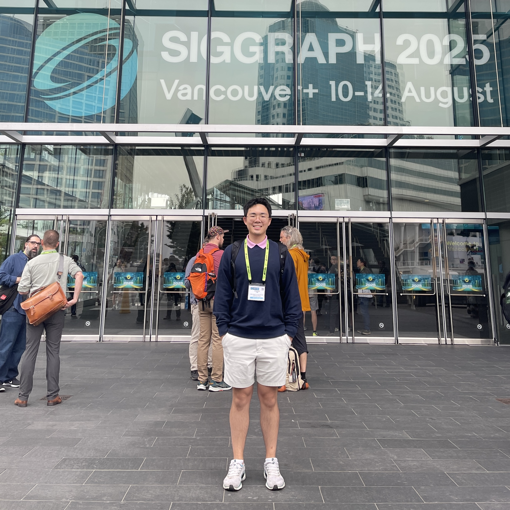

|
Frank Fan I'm an incoming PhD student at the University of Waterloo under the supervision of Prof. Gladimir Baranoski. I am also affiliated with the Natural Phenomena Simulation Group. Previously, I obtained both my Master's of Mathematics and my Bachelor of Computer Science at the University of Waterloo. Feel free to read my Master's thesis! |
 |

ResearchMy main research interests lie in computer graphics, light transport, and material appearance modelling. |
PublicationsA Phasor-based Camera-Space Construction for Making Radiometric Accumulation Assumptions Explicit Yuxiang Sun, Gladimir V.G. Baranoski, Frank Fan, Scott Steinfield Proceedings of the 2026 Eurographics Symposium on Rendering - EGSR 2026, Eds. I. Gkioulekas and A. Jarabo, Bordeaux, France, July 1 - 3, 2026, pp 1-12. |
Technical ReportsA Study on Rendering Techniques to Visually Represent Sparkles Frank Fan, Gladimir V.G. Baranoski Technical Report CS-2024-02, D.R. Cheriton School of Computer Science, University of Waterloo, January 2024. |
ProjectsSome CS projects from my undergrad. |

|
CS 383 - Computational Digital Art Studio
Digital art pieces for the course. |

|
CS 489 - Stochastic Techniques for Image Synthesis and Biomedical Applications
Colloidal Particle Collision Detection Simulation |